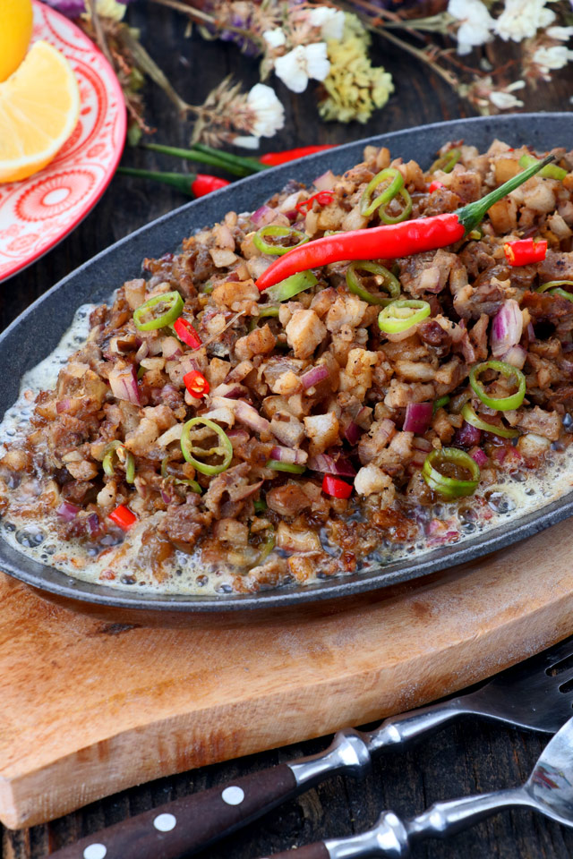

Sisig

Description
This Filipino dish of pig's ears in a spicy, sweet and sour sauce is a perfect appetizer when people are drinking beer.
Ingredients
- 2 1/4 pounds pig's ears, cut into thin slices
- 3/4 cup water
- 1/3 cup white vinegar
- 2 tablespoons white sugar
- 1 teaspoon salt
- 1/4 teaspoon ground black pepper
- 1 green bell pepper, cut into thin strips
- 1 red bell pepper, cut into thin strips
- 1 large green chile pepper, seeded and sliced
Steps
- Pour the water in a pan and bring to a boil Add salt and pepper.
- Put-in the pigs ears and pork belly then simmer for 40 minutes to 1 hour (or until tender).
- Remove the boiled ingredients from the pot then drain excess water
- Grill the boiled pig ears and pork belly until done
- Chop the pig ears and pork belly into fine pieces
- In a wide pan, melt the butter or margarine. Add the onions. Cook until onions are soft.
- Put-in the ginger and cook for 2 minutes
- Add the chicken liver. Crush the chicken liver while cooking it in the pan.
- Add the chopped pig ears and pork belly. Cook for 10 to 12 minutes
- Put-in the soy sauce, garlic powder, and chili. Mix well
- Add salt and pepper to taste
- Put-in the mayonnaise and mix with the other ingredients
- Transfer to a serving plate. Top with chopped green onions and raw egg.
- Serve hot. Share and Enjoy (add the lemon or calamansi before eating)